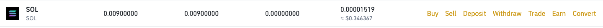
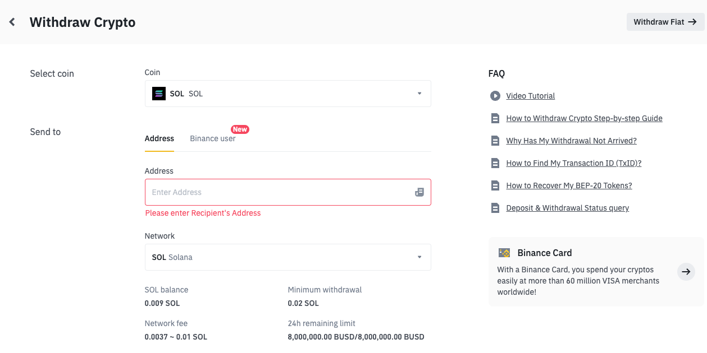

A 10 minute read covering everything you need to know!
Before you can dive into the world of NFT's you need to have a rough
understanding of what Cryptocurrency is, after all it's the currency
that you will be using. If this is your first time learning about
crypto don't worry this guide will break it down as simple as
possible, but if you already understand how crypto works click here to
skip this section and get right into NFT's.
Understanding Crypto
At its core, cryptocurrency is typically decentralized digital money
designed to be used over the internet. Bitcoin, which launched in
2008, was the first cryptocurrency, and it remains by far the biggest,
most influential, and best-known. In the decade since, Bitcoin and
other cryptocurrencies like Ethereum have grown as digital
alternatives to money issued by governments. Crypto makes it possible
to transfer value online without the need for a middleman like a bank
or payment processor, allowing value to transfer globally,
near-instantly, 24/7, for low fees. Cryptocurrencies are usually not
issued or controlled by any government or other central authority.
They’re managed by peer-to-peer networks of computers running free,
open-source software. Generally, anyone who wants to participate is
able to. If a bank or government isn’t involved, how is crypto secure?
It’s secure because all transactions are vetted by a technology called
a blockchain. A cryptocurrency blockchain is similar to a bank’s
balance sheet or ledger. Each currency has its own blockchain, which
is an ongoing, constantly re-verified record of every single
transaction ever made using that currency. Unlike a bank’s ledger, a
crypto blockchain is distributed across participants of the digital
currency’s entire network No company, country, or third party is in
control of it; and anyone can participate. A blockchain is a
breakthrough technology only recently made possible through decades of
computer science and mathematical innovations.
How does Crypto work with NFT's?
As many NFT's can be considered as art, I will use it as an example to
explain. When expensive art works are purchased in real life they will
be paid for in cash, this may be in Pounds, Dollars, Euros any
currency. In the world of NFT's it is the same concept you are
purchasing an NFT but instead of paying with regular money you are
paying using Crypto (ETH or SOL). Also because any transaction made
using crypto will be on the blockchain for that crypto currency all
the transactions are visible and can be tracked. So if you own an NFT
the blockchain proves you are the owner, this adds more security to
your NFT's as no one will be able to steal your NFT (even if they
screenshot it they won't own it!)
What do you need to get started?
First you need to own crypto, in this case Solana.
When deciding how much crypto you want to purchase, you should know a few things about crypto, the markets
most times are very volatile so you should only buy an amount you are comfortable with, as the value of your
Solana can fluctuate very easily. Here is Binance's guide to buying Solana, if you want to use any other major crypto
exchange it will be a similar process.
Now you have Crypto how can you use it to buy NFT's?
So to use the crypto you have purchased you need to have a Solana specific wallet (this wallet will be used
to store your Solana and any NFT's you accquire). This wallet acts the same as your normal everyday wallet
but instead of having cash you have Solana! There are many different Solana wallets available but the most
popular and secure one is Phantom Wallet, and here is the official guide on how to create a wallet from the Phantom website.
YOU SHOULD NEVER SHARE YOUR SECRET RECOVERY PHRASE WITH ANYONE!
So you have your wallet, how can you move your crypto to it?
Great now your wallet is setup a few more steps and your wallet will be ready to buy and sell NFT's. Head
over to Binance (or the exchange you used to purchase your Solana) and find your Solana you should see
options to Buy Sell Deposit Withdraw Trade Earn Convert.

Then select Withdraw what this does is it withdraws the Solana from your Binance account and you can send it
to your Phantom wallet, where it can be used to buy your NFTs.

MAKE SURE THE NETWORK IS SOL Solana AS IF IT IS NOT YOUR CRYPTO WILL BE
LOST!
Now just copy your address from your Phantom wallet and paste it in Binance and withdraw, and shortly after it
will appear in your Phantom wallet! Once the Solana you withdrew appears in your Phantom wallet you are now
ready to buy and sell NFT's which is up next in this guide!
Checklist when buying NFT's:
So now you are ready to buy and sell NFT's but how can you find out what NFT's are worth buying? Before you go
searching through marketplaces for some NFT's to purchase you should think about a few things:
Is it beginner friendly?
Most NFT projects will be anticipating for people who are new to the NFT space to be
joining, so they should have very simple and clear guides to explain how to buy one of their NFT's along
with any red flags to look out for.
Does it look nice?
After all most NFT's are considered to be art so you want to make sure it looks good
before you purchase it!
Is the project reliable?
So you should look through the project's social media like their Twitter, Discord,
Instagram, any social media showing what the project plans to do. If a page has 100,000 followers but only
get 100-200 likes on their posts that is a RED FLAG as these followers were most likely purchased or botted.
This is a checklist from Magiceden for NFT Marketing, but it can be used for you to check if a
project is legit or not.
Are the creators reliable?
Look into the developers/owners most will post their twitter or their linkedin so just go
through
their tweets see what they’re saying and see if they own any big nfts and if they’re interested in crypto
etc.
Also see if they’ve been involved in any previous projects and how did they do.
Is the community interested?
This is similar to going through their social media, all NFT projects will have a discord
or some sort of chat place where everyone who is interested in the project can join and discuss the project.
You should be looking for how the members of the community talk about the project:
Are they interested in the project?
Are the creators of the project interacting with the community?
What is the general vibe of the community?
As you go through more and more projects you will develop a better understanding of what
you should look out for.
NFT Key Terms:
Here are all the key terms you will need to know:
Bullish - This could do well I'm excited for this
Bearish - The opposite of bullish.
Mint - Before a project can hit the secondary markets, they need to minted out. Think of
it as buying at retail price.
If you mint an NFT you're the original owner of that NFT
Floor - The floor is set by the lowest priced NFT on the market. (example: If the
cheapest
NFT you can buy from the
secondary market is 1 SOL, the floor price is 1 SOL)
Secondary Market - Sometimes referred to as Secondary for short, a Secondary Market is a
market place where you can
buy/sell your NFT's after mint.
WL - Short for Whitelist.
Whitelist - Reserving your spot on a mint. In most cases you're guaranteed a mint. Not
always though.
Roadmap - The written out direction a project will continue to build in. Their
blueprint.
DYOR - Do your own research
NFA - Not Financial Advice
Diamondhand - Committing to holding something for an extended period of time regardless
of
dips/pumps.
Rug/Rugged - Project secretly made to sell out, take the money, and leave. Always DYOR!
Dox/Doxxed - To reveal your real identity. This brings some people sense of security for
newer projects in the space.
Pump/Dump - Pumping is when the floor is being swept by people (pushing the price up),
and
Dumping is when a bunch are
being sold at once.
DAO - *Decentralized Autonomous Organization. Most DAO's are closed community of people
that provide intel, make group
decisions on votes, etc.
Alpha - Intel on a project that hasn't hit the public quite yet. A potential opportunity
to get in early
FOMO - Fear of Missing Out. Some people will buy into a project that is already pumping
due to FOMO, or they'll sell
another project to buy something else "before its too late".
* DAO's are a great first investment as they are great with providing information on which
NFT projects have potential to do well, which ones could potentially be a scam, and in general assist you on
your NFT journey.
Now you are ready to take on the Solana NFT Space, check out this Youtube video if you want to learn more. If
you want to check out the Ethereum Guide click here !